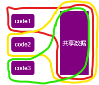
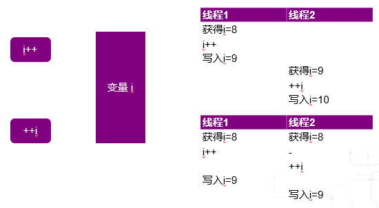
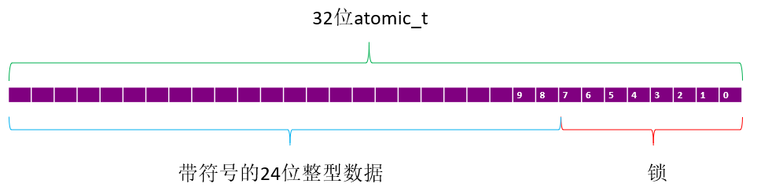
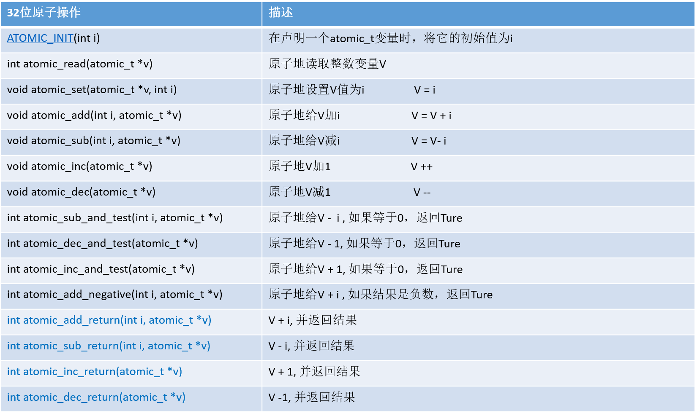
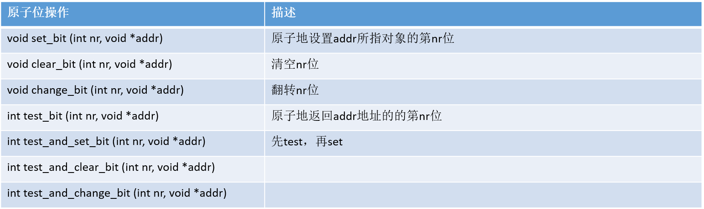
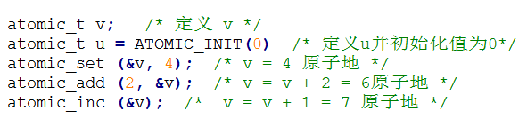
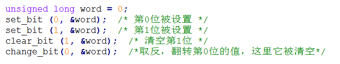
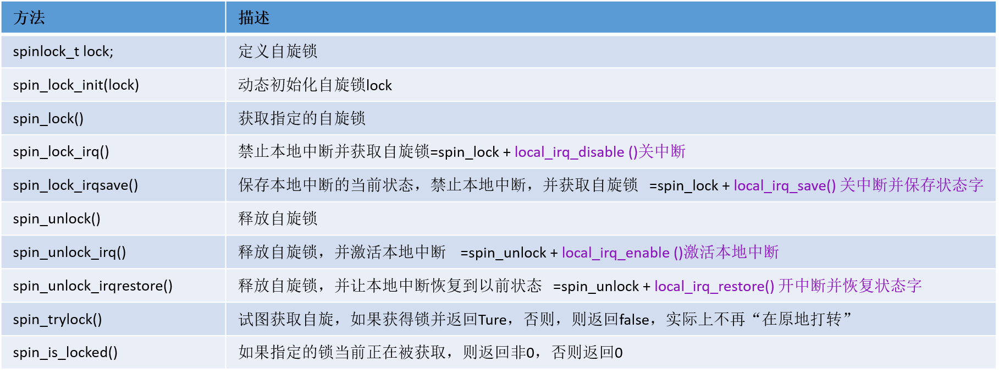
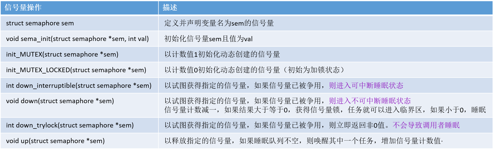
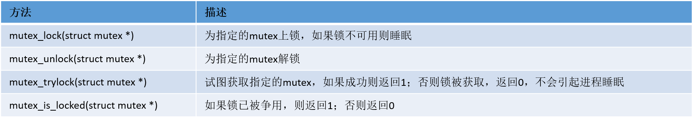

临界区，临界资源，并发，竞争条件，同步
临界区就是访问和操作共享数据的代码段。
属于临界资源的硬件有打印机、磁带机等,软件有消息缓冲队列、变量、数组、缓冲区等。
示意图如下：

如上图，代码段code1,code2,code3分别都访问和操作同一块数据区域，因此这些代码段就是临界区，而这块数据区域就是临界资源。实际上，code离不开data，笔者认为临界区也包括了指令操作的数据，正如上图红色，黄色，绿色所圈。
试想，倘若操作的先后顺便不一致，共享数据最终的呈现状态会不会不一样呢？
并发指多个执行单元同时访问同一个资源。
竞争条件指多个线程或者进程在读写一个共享数据时结果依赖于它们执行的相对时间的情形。
同步就是避免并发和防止竞争条件。

假设线程1执行指令i++，线程2执行指令++i。每一行代表一个时间片。上面表示线程1执行完后才执行线程2. 下面表示，线程1和线程2同时获得变量i，此时i的值为8，下一个时间片，线程1进行i++操作，而线程2在此时未处理（sleep），接下来的一个时间片，线程1sleep，而线程2进行++i操作。接下来的又一个时间片，线程1得到i的值为9，线程2得到的i的值也为9.
#死锁
死锁就是线程等待的资源不释放，线程无法继续。
自死锁：线程试图获得自己已持有的锁。
ABBA死锁：如下图，每行表示一个时间片，线程1和线程2同时分别获得锁A和锁B，在下一个时间片，线程1试图获取锁B（已被线程2持有，需要等待线程2释放锁B），线程2试图获取锁A（已被线程1持有，需要等待线程1释放锁A）。然而，线程2想要释放锁B，就必须先完成获得锁A这件事，它在等待线程1释放锁A。线程1想要释放锁A，就必须先完成获得锁B这件事，它在等待线程2释放锁B。于是，线程1和线程2由于相互想要获得对方的锁，进入死锁状态，这就是ABBA死锁。
如何规避死锁
- 按加锁相反的顺序解锁：加锁（a->b->c），解锁（c->b->a）
- 防止饥饿：设置超时时间，防止永远等待
- 不要重复请求 同一个锁
- 加锁方案要设计得简单
#锁的争用
锁lock：使程序以串行方式对资源进行访问
lock contention：锁被占用时，其他线程等待获得该锁
锁的扩展性：
锁的粒度：粗锁保护大块数据，细锁保护小块数据
运行队列锁被争用：本质是在调度程序中把整个调度进程下放到单个处理器执行
原子
原子操作：指令执行过程不被打断
原子操作只能用于临界区只有一个变量的情况。
为什么可以不被打断？
原子整数操作
32位原子整数操作
原子整数操作：只对atomic类型数据进行处理

函数及相应的描述：

64位原子整数操作
原子位操作



自旋锁
自旋锁同一时刻只能被一个执行线程持有，其余想持有的必须等待，cpu一直忙等待，未睡眠,所以会造成CPU处理时间的浪费。自旋就是等待自己释放锁。
1 | 定义自旋锁 |
自旋锁使用时有2点需要注意：
1：自旋锁是不可递归的，递归的请求同一个自旋锁会自己锁死自己。
2：线程获取自旋锁之前，要禁止当前处理器上的中断。（防止获取锁的线程和中断形成竞争条件）
比如：当前线程获取自旋锁后，在临界区中被中断处理程序打断，中断处理程序正好也要获取这个锁，于是中断处理程序会等待当前线程释放锁，而当前线程也在等待中断执行完后再执行临界区和释放锁的代码。
笔者认为这里就是ABBA锁，只不过这里线程2恰巧就是中断而已。

读写自旋锁
允许读的并发，即可多个读进程，但只允许1个写进程
1 | 定义和初始化读写自旋锁 |
顺序锁
被顺序锁保护的共享资源，读和写不互斥。读期间发生了写，则需要重新读取数据
1 | 写顺序锁 |
读-复制-更新
RCU：read-copy-update
信号量
信号量，又名semaphore，是一种 用于同步和互斥的手段。
特点：睡眠锁，等待的过程不会占用CPU时间，适用于等待时间较长的临界区。
信号量消耗的CPU时间的地方在于使线程睡眠和唤醒线程，如果(使线程睡眠 + 唤醒线程)的CPU时间 > 线程自旋等待的CPU时间，那么可以考虑使用自旋锁。
信号量的值可以是0，1，n。总之非负整数。
1 | 定义信号量 |
信号量用于互斥和同步
互斥：
同步：

PV原语
1 | P(S)等价于S=S-1 |
1 | V(S)等价于S=S+1 |
S=0
P(S)则S=-1，进程等待
V(S)则S=0，进程等待
信号量与自旋锁的区别
信号量表面看和自旋锁很相似，区别在于争用自旋锁的线程会一直循环尝试获取自旋锁，而争用信号量的线程在信号量为0时，会进入睡眠，信号量可用时再被唤醒。
计数信号量和二值信号量
信号量有二值信号量和计数信号量2种，其中二值信号量比较常用。
二值信号量：
表示信号量只有2个值，即0和1。信号量为1时，表示临界区可用，信号量为0时，表示临界区不可访问。
计数信号量：初始化时把数量设为大于1的非0值
计数信号量有个计数值，比如计数值为5，表示同时可以有5个线程访问临界区。
互斥体
互斥体也是一种可以睡眠的锁，相当于二值信号量，只是提供的API更加简单，使用的场景也更严格一些，如下所示：
1：mutex的计数值只能为1，也就是最多只允许一个线程访问临界区
2：在同一个上下文中上锁和解锁，给mutex上锁者必须负责给其解锁
3：递归地上锁和解锁是不允许的。也就是说，你不能递归地持有同一个锁，同样你也不能再去解锁一个已经被 解开的mutex.
4：持有1个mutex时，进程不能退出
5：mutex不能在中断或者下半部中使用，也就是mutex只能在进程上下文中使用
6：mutex只能通过官方API来管理，不能自己写代码操作它
1 | 定义互斥体 |

互斥体的实现依赖于自旋体，互斥体是进程级的，用于多个进程之间对资源的互斥。
各种锁使用的场景pk
完成量
https://blog.csdn.net/newnewman80/article/details/16112669
https://www.cnblogs.com/tureno/articles/6080923.html
https://www.cnblogs.com/linhaostudy/p/6670693.html
https://www.cnblogs.com/edver/p/7260696.html
https://blog.csdn.net/qq_38619183/article/details/83097475
实现设备只能被一个进程打开的3种方式
原子变量实现设备只能被一个进程打开
过程描述：
- 假设线程A拿到了原子变量xxx_available，执行函数atomic_dec_and_test(&xxx_available)，变量xxx_available由1减1变成了0，此时函数返回True。接着取反为FALSE，不走if{}内的内容了。执行后面打开设备的代码。
- 假设现在又线程B想要打开设备，首先它来取原子变量xxx_available，此时变量值为0，执行行函数atomic_dec_and_test(&xxx_available)，变量xxx_available由0减1变成-1，此时函数返回flase，取反为true，走if{}的内容。执行函数atomic_inc(&xxx_available)，于是变量xxx_available由-1加1，变成0，返回-EBUSY。
- 接着又一个线程C想打开设备，只要线程A未释放原子变量，其他线程都要经历步骤2.
- 假设线程A此刻释放原子变量，即执行atmomic_inc(&xxx_available);那么，变量恢复值1.其他线程想要打开设备，将执行步骤1.
1
2
3
4
5
6
7
8
9
10
11
12
13
14
15
16
17
18
19
20
21
22
23
24static atomic_t xxx_available = ATOMIC_INIT(1); //定义原子变量xxx_available，并赋初值1给它。
static int xxx_open(struct inode *inode, struct file *filp)
{
...
if(!atomic_dec_and_test(&xxx_available)){
atomic_inc(&xxx_available);
return -EBUSY;
}
.../*这里才是打开的代码段*/
return 0;
}
static int xxx_release(struct inode *inode, struct file *filp)
{
atmomic_inc(&xxx_available);
return 0;
}
}
fd = xxx_open ("/dev/buttons", O_RDWR);
if (fd < 0)
{
printf("can't open!\n");
return -1;
}
自旋锁实现设备只能被一个进程打开
1 | int xxx_count = 0;// 定义文件打开次计数 |
信号量实现设备只能被一个进程打开
1 | static DECLARE_MUTEX(xxx_lock); |